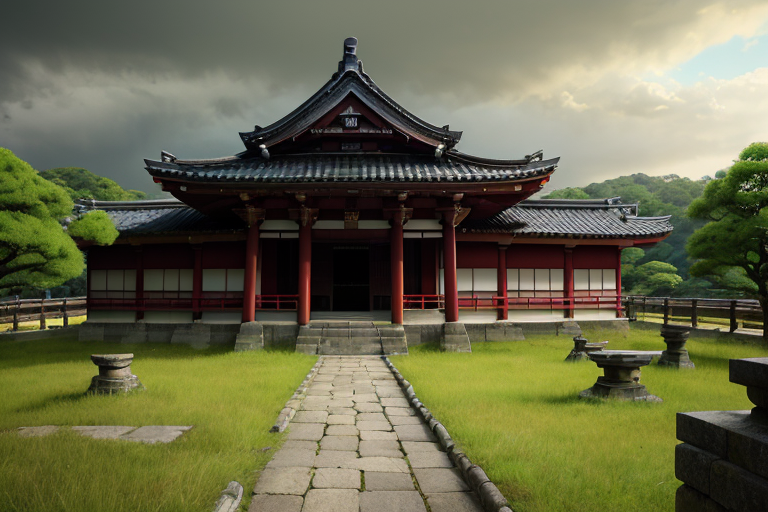
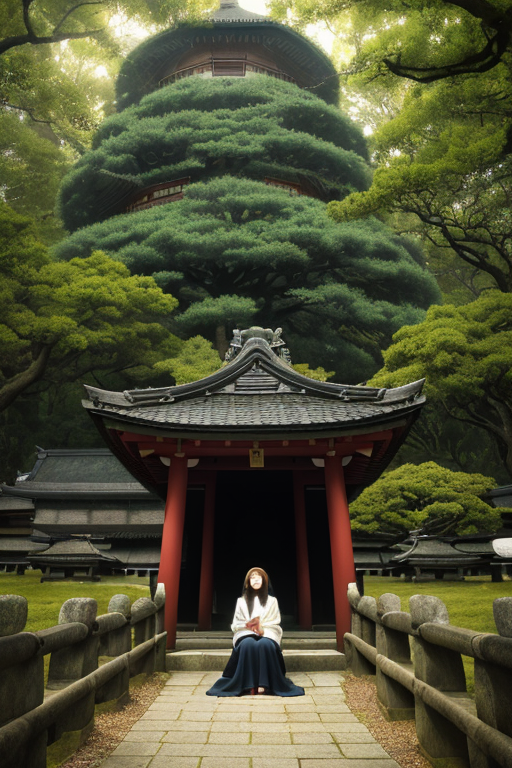
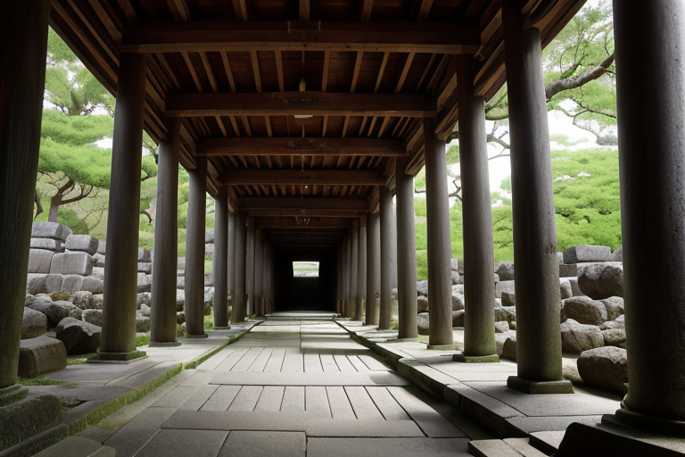
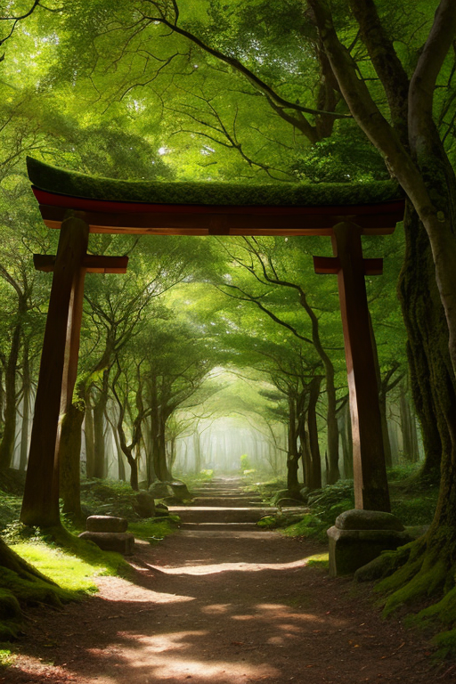
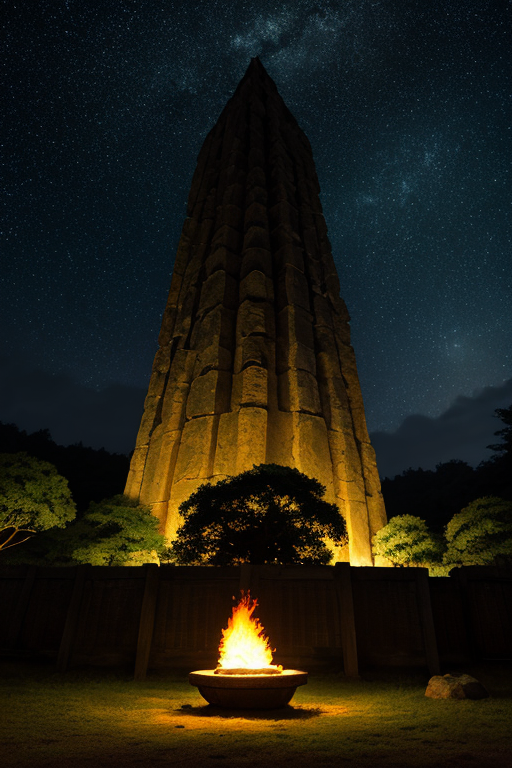

第一章 現実の奈良
あなたはまだ気づいていない。この土地にも、王がいることを。
東大寺の大仏殿は、観光客のざわめきを吸い込むように静まり返っている。巨大な盧舎那仏の掌の上には、微かな埃が舞い、七百五十年という時間の重みが、空気の密度を変えている。平城京の跡地は、今は広大な野原が広がり、その下にはかつての都の骨格が、大地の記憶として眠っている。ここは始まりの地だ。日本の律令国家が形を成した場所。聖武天皇が大仏建立という巨大な祈りによって、国家の不安を鎮めようとした場所。
その歴史の転換点のすべてが、この土地の「古層」に刻まれている。地震の歪みは、この古層を伝わってやってくる。深い地中から響く、太古の波。それを感知する者が、ここにはいる。鹿せんべいを手にした子供の笑い声の裏側で、ある静寂が、地脈の僅かな軋みに耳を澄ませている。始まりは、常に静けさの中にある。そして、その静けさを守るために、王は立っている。

第二章 歪みの兆候
法隆寺の五重塔の先端が、目に見えないほど微かに揺れた。それは風ではない。地中深く、平城京が築かれた時代から連なる古層が、わずかに軋んだのだ。奈良公園で鹿せんべいを頬張る観光客も、春日大社の回廊を歩く参拝客も、その揺れには気づかない。気づくのは、静寂そのもののような存在だけだ。
ナラティア・オリジンは、古木の根のように大地に触れ、流れてくる情報を読む。歪みの波は、聖武天皇が大仏建立という巨大な祈りで鎮めようとした、国家的不安の記憶と共鳴していた。歴史の重みが、現代の地殻に影を落とす。それは巨大地震の前兆ではない。むしろ、長い時間の中で蓄積された「始まり」の記憶が、時折、現在を掠めるように現れる現象だ。
主席妖精オリジェラが、古代波の保存記録を辿る。「王。この波紋、吉野山の地脈と同期しています」。王は頷く。始まりは一点ではない。無数の始まりが層をなし、時に共鳴する。その共鳴が、今、微かな歪みとして現れている。彼の役目は、その共鳴が破壊的な振動へと増幅しないよう、古層の静寂を保つことだ。

第三章 王の葛藤
吉野山の地脈の共鳴は、次第に強さを増していた。それは単なる地殻の歪みではない。聖武天皇が平城京に都を定め、大仏建立を発願した、あの「始まり」の意志が、千年の時を超えて再び脈動し始めているのだ。変革の波紋。それは時に、既存の秩序を揺るがす地震をもたらす。
オリジェラが保存する古代波は、激しく乱れた。ヤマトナが奈良公園の鹿たちと共に感知する地の軋みは、増幅の一途をたどる。「このままでは、平城京跡周辺に、局地的だが深刻な地割れが生じます」。オリジェラの声に、静寂はなかった。
王は動じない。深緑の瞳は、東大寺の大仏殿を、法隆寺の古びた伽藍を静かに見つめる。変革を促すこの共鳴を、静寂をもって止めるべきか。それとも、新たな「始まり」を生むための胎動として、ある程度の歪みを許容すべきか。彼は感情を持たないはずだった。しかし、この古都が育んだ無数の祈りと意志の密度が、彼の内に一つの問いを生んだ。始まりを守るとは、始まりを封じることなのか。

第四章 妖精との対話
「王よ、この共鳴は『終わり』ではなく、『始まり』の胎動です。」
春日大社の深い森の奥、オリジェラは静かに言った。彼女の声は、古木の葉擦れの音と溶け合う。傍らで、ヤマトナが首を傾げ、琥珀色の瞳を揺らめた。
「平城京が始まった時も、大仏建立が始まった時も、この地には大きな歪みが生じました。それは破壊ではなく、新たな層が積み重なるための、地殻の軋みです。」
彼女は手にした一枚の柿の葉寿司を見つめる。葉の上に鎮座するのは、長い時間を経た今も変わらぬ形。しかし、中身は時代と共に微調整され、今の味がある。
「私たちは古層を保存する者です。しかし、保存とは、動かないものを守ることではありません。吉野山の桜が、千年の時を経て咲き続けるように、『始まり』の力そのものを、次の時代へと受け渡すことです。この変革の波こそが、真の『始原』なのです。」
鹿せんべいを手にした子供の笑い声が、奈良公園の静寂を優しく破る。

第五章 微調整と余韻
聖武天皇の詔から十年、大仏建立は未曾有の大事業となっていた。人々の熱意は国を揺るがすが、技術と物資の限界は現実として立ちはだかる。ある夜、鋳造用の巨大な炉に致命的な亀裂が入ったとの報が届く。この失敗は事業そのものの断念を意味した。
東大寺の建設現場を見下ろす丘で、ナラティア・オリジンは静かに目を閉じた。王の星から授けられた「一度だけ」の権能。歴史の大きな流れを、ほんのわずか、しかし決定的に曲げる力。それをこの地の「始まり」のために使う時が来た。
次の瞬間、炉の内部で、偶然にも亀裂を塞ぐように溶けた金属が流れ、偶然にも強度を増す配合が生まれた。それは誰にも気付かれない、ごく小さな「偶然」の積み重ねだった。しかし代償は大きい。この介入により、ナラティア・オリジンは自らの「静寂」の一部を永久に失った。感情のざわめきが、古層の王の内側に、初めて生じる。
やがて完成する大仏の姿は、人々の願いの結晶であると同時に、見えざる調整の痕跡でもあった。始まりは、一つの完璧な点にはない。幾重にも折り重なる選択と偶然、そして、それらを静かに見守り、ほんの少し手を貸す存在のなかにこそ、ある。
あなたの町にも、王がいる。